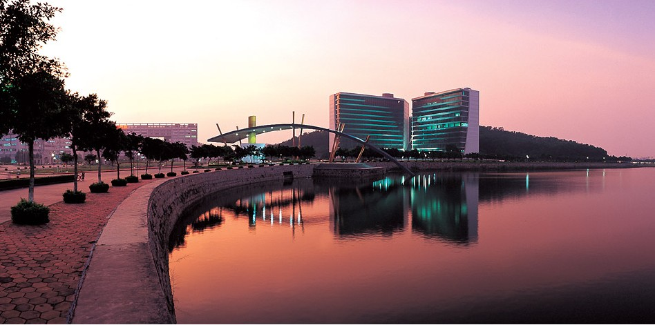

校史首页
关于中珠
中珠讲坛
学术研究
人物轶事
中珠论坛
当前位置：
首页
> 关于中珠 > 校区掠影
校区纵览
|
校区掠影
|
你所不知道的中珠
彩虹门
图书馆
教学楼
风雨球场
宿舍
情侣岛
沕水
图书馆

这张图片所展现的是珠海校区图书馆。大楼面向校区南大门，正面形如展开阅读的鸿篇巨册，步入校区南大门，令人顿感浓郁的书香扑面而来；背靠葱翠的山丘，263级大理石阶梯从“书脊”的“中缝”直达山顶，通往长约六百米、气势恢宏的教学大楼顶层，喻意“书山有路勤为径”；登上山顶阶梯平台从“书脊”的“中缝”向南极目远眺，近处是形如风帆的珠海校区南大门，远处是无边无际的湛蓝色大海，海鸥旭日齐飞，蓝天碧水共色，喻意“学海无涯苦作舟”。
近观珠海校区图书馆，巨幅落地玻璃幕墙，晶莹剔透、富丽堂皇、气势磅礴，体现了高等学府的神圣与典雅；遥望珠海校区图书馆，它与教学大楼浑然一体犹如绵延的巨龙，既蕴涵着“蛟龙入海”的意义，又象征着中山大学的腾飞；蓝天、碧海、绿地、苍山、花圃的迷人风景，宁静、典雅、自然、舒适、文明的诱人氛围，绝对是令人心驰神往的知识殿堂。